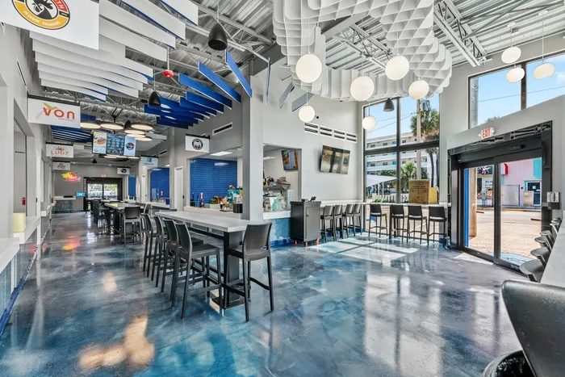
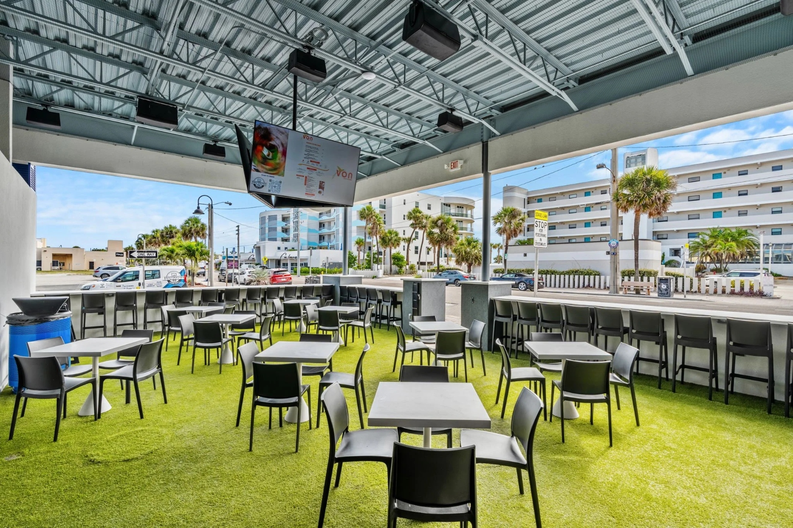

Wave Food Hall Cocoa Beach
Two-story corner glass, interior storefront walls, and side facade glazing for Cocoa Beach’s seven-kitchen food hall on Atlantic Ave — delivered under Certified General Contractors in ESWindows systems.
Without the glass, it’s a box. With it, it’s a landmark.
Wave Food Hall — operating as Destination Downtown Food Hall — is Cocoa Beach’s communal dining destination on Atlantic Ave: seven restaurant concepts under one roof, with a central bar, live entertainment, and a covered outdoor dining patio facing the street.
The building is immediately recognizable — the bold blue facade, the two-story corner glass wall, the palm trees framing the entrance. The glass is central to that identity. The floor-to-ceiling storefront wrapping the corner opens the food hall to the street, inviting passersby in and letting the energy of the interior spill outward.
ACG delivered the commercial storefront glazing package, working under general contractor Certified General Contractors with an ESWindows commercial storefront system. The scope covered three distinct areas of the building: the corner storefront, the interior storefront glass, and the side facade glazing.

Street presence, inside and out.



Three areas. One system.
Corner storefront system
Two-story floor-to-ceiling glass wrapping the corner entry, with automatic entrance doors — a landmark presence on Atlantic Ave, visible from the intersection and drawing guests in from the street.
Interior storefront glass
Full-height glass walls along the dining room create the indoor-outdoor connection — natural light floods the interior and the food hall reads as a street-level marketplace, not an enclosed restaurant.
Side facade glazing
Extended storefront glass connecting to the covered outdoor dining area — visual continuity between the indoor hall and the turf-and-bar patio that hosts live entertainment and overflow dining.
Coastal performance
Brevard County sits in a high-wind-load zone. The ESWindows commercial storefront system meets those structural requirements while holding the clean sightlines and minimal framing profile the design demanded.
More from the portfolio.


Have plans? Send them to Connor directly.
Upload drawings and bid-date info — a scoped proposal or budget direction comes back in 48 hours.